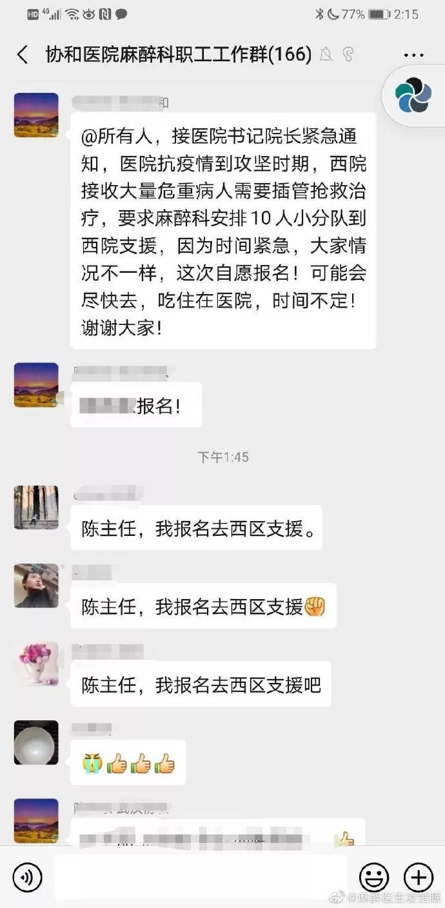

有沮丧，也有欣喜若狂 | 万字长文，真实记录我们在金银潭的日日夜夜
原文链接 备份链接 医学史 今天你的行医故事，就是明天的医学史 按 除夕夜，上海首批136名医务人员组成的医疗队紧急驰援武汉。本文作者，上海仁济医院呼吸科主治医师查琼芳从1月24日起就进驻金银潭医院重症病房工作。在完成高强度、忙碌而艰苦的 …
专家门诊 | 合理用药 | 热点聚焦 | 手术日 | 医学史
手术日
手术室里的惊心动魄

按
凶险，无时不刻在发生。。。
1
才从隔离病房出来，24小时，10个人的团队插管20多次，快累趴~~~ 好在总算基本满足了部分重症病人机械通气的需求。
凶险，无时不刻在发生。
考虑了半天，还是把这段视频放上来，大家看不懂仪器没关系，看字就成。
不谦虚，这是武汉疫情一线最真实的抢救实况，是我在隔离病房用污染区专用手机拍摄的。

这个病人插管前血氧饱和度仅有60%，意识已经消失，血压垮掉测不出，心率呈现凶险的室性心动过速。
麻醉医生迅速给药/托面罩给氧/插管……抢救过程中，病人心跳一度“一字跌停板”，立即做心肺复苏，给肾上腺素，做电除颤。
万幸，病人情况迅速稳定，心跳回来了，从60到70到83、84、87……血氧饱和度慢慢回升。
真是一只脚踏进了鬼门关，被我们硬生生拽回来。救回一条命的感觉真好！
当广州中山二院支援护士老师用对讲机向办公室汇报病人好转时，执行抢救的麻醉医生都快累得趴在地上了…
ps，每次只要是我们出场，一定是病情危重的时候。正常人的血氧饱和度至少是95%以上，但我们接触的病人血氧饱和度都很低，低于80%的血氧饱和度，就撑不了几个小时了，我们就是在和死神抢时间。
2
本人姓凌，武汉协和医院麻醉医生，讲完视频，再来说说我们这个重症生命支持团队。
前期，由于麻醉科工作的特殊性，我仅数次短暂地前往发热门诊/隔离病区支援，说实话，真当不起“疫情一线”的称呼。
而从本月13日起，我连同本院麻醉科10余名骨干力量，组成了冲在最危险一线的急救插管突击队，简称“插管队”，奔赴西院区隔离病房，真真正正地上火线了。
临出发之际，我们笑着说，“插管队”这个说法似乎还不够悲壮，应该叫“敢死队”。
为什么？一言以蔽之，气道直接开放——呼吸道接触风险最高，没有之一！

重症肺炎的患者很多都需要进行呼吸机治疗。而接受这个治疗时，需要把一根导管经口腔置入气管内，然后与呼吸机管道相连接，这样就可以进行呼吸治疗了。一般把导管置入气管的工作是需要麻醉医生完成的。而大多数医院目前使用的是经典的直视喉镜，置入导管时，麻醉医生的眼睛需要凑近患者的口腔方能看到气管开口，从而把导管正确置入气管内。当导管进入插管那一刻，病人的呼吸道会涌出传播力超强的气溶胶！
这个过程有多么危险，我想不言而喻了吧？
分享一下我们麻醉科医生执行急诊气道插管的防护措施：隔离服+防护服，N95口罩+外科口罩、护目镜+防喷溅面屏、两层外科手套、手术帽、双层鞋套。只有这个程度的防护（二级半，没有正压头套达不到三级）才能有效保护医生。
就算防护到位，每天都在接触确诊病例，咳嗽的很多，总归防不胜防。大家都知道，N95只是阻隔95%的有害生物，每天暴露，如果抵抗力低、病毒负荷大活力强，就会感染。
谁不怕感染？可真上了战场，也就顾虑不了那么多。希望我们用手中的喉镜和导管，从COVID19那里，能抢下更多的人命。
这个城市，这个城市的人民，承受了太多苦难。愿一切快点过去。

[版权相关事宜，请联系刀先生]
·END·

冷静 | 专业
关键时刻派用场

微信号：SH-scalpel
原创内容 谢绝转载
刀先生（编辑）邮箱：shanghailyd@126.com
QQ:3268131491
原文链接 备份链接 医学史 今天你的行医故事，就是明天的医学史 按 除夕夜，上海首批136名医务人员组成的医疗队紧急驰援武汉。本文作者，上海仁济医院呼吸科主治医师查琼芳从1月24日起就进驻金银潭医院重症病房工作。在完成高强度、忙碌而艰苦的 …
原文链接 备份链接 说出来你们都不相信，一个昨天都还在刷朋友圈的人，居然刚从新型肺炎的隔离病房出来？？？？？ 没有开玩笑，seriously。 一月下旬我受凉感冒，慢慢过渡到扁桃体发炎，嗓子疼咳嗽，陆陆续续买了点药吃，咳嗽有所缓解， …
原文链接 备份链接 祁立说现在最大的困难，是发热门诊的就诊人数过多。而一线医务工作者最需要的，是能让患者根据规范的指南分级诊疗，减轻发热门诊和隔离病房不必要的压力。整个采访，他没有表达恐慌和焦虑，只希望传递客观、真实、有价值的信息。 记 …
原文链接 备份链接 3月21日。 封城第59天。这么长时间了！ 昨天那么大的太阳，今天突然就阴了。下午还下了点雨。这时节的春雨，对于院子里的树以及花，都还是很需要的。前两三天，武大樱花盛开，树下空荡无人，估计是记者拍了一些照片，同学群里便 …
原文链接 备份链接 3月20日。 继续大晴，气温到中午已高达26度。家里的暖气还没关，发现里外温度都差不多了。开窗透气时，意外发现院子里飞来几只喜鹊。它们在门前的香樟树和玉兰树上跳来跳去，有一只还进到我家门口，喝石臼里的水。看得人很是欢 …